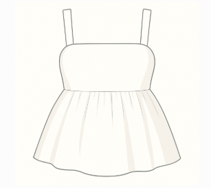

Tie Top – Patron PDF
Téléchargez le patron au format A4 pour imprimer et assembler.

Télécharger le patron PDF
Tie Top – Instructions de Couture
Suivez ce guide pas-à-pas pour réaliser votre top à nœuds.

Télécharger les instructions PDF
Baby Doll Top – Patron PDF
Imprimez le patron à taille réelle et assemblez facilement.
Télécharger le patron PDF
Baby Doll Top – Instructions de Couture
Suivez pas à pas les étapes pour confectionner ce top élégant.

Télécharger les instructions PDF